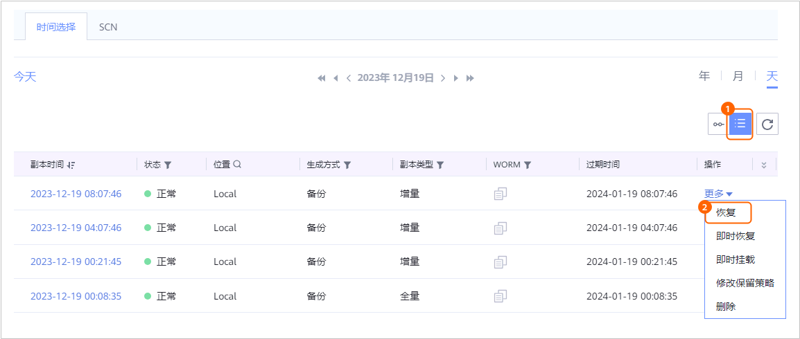
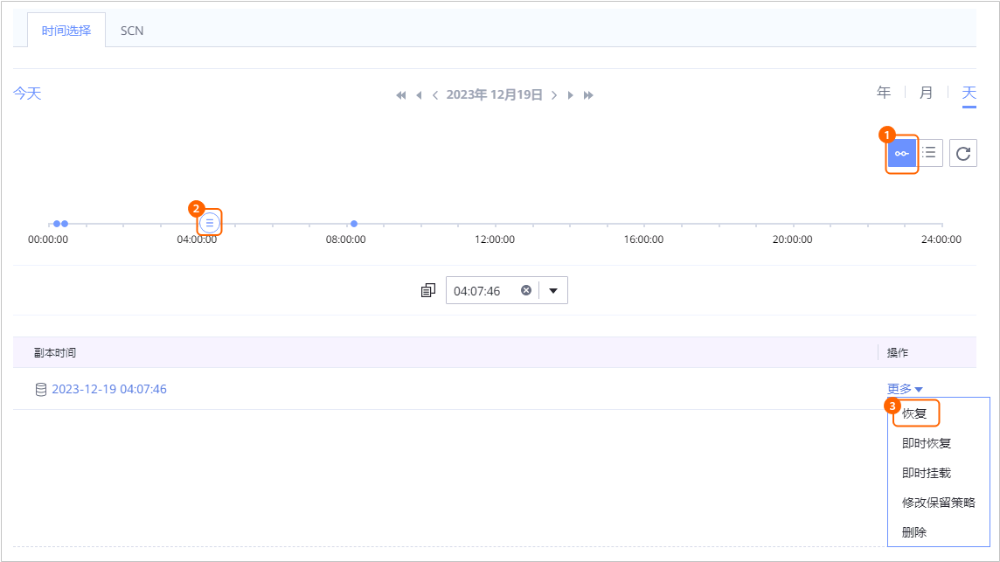

当需要对已备份的数据库进行恢复时，可以参考本节恢复数据库至原位置或新位置。
背景信息
- 恢复Oracle数据库支持：指定副本恢复、指定时间点恢复、指定SCN恢复。
- RMAN恢复支持使用备份副本、复制副本、导入的副本进行恢复。支持恢复至原位置（复制副本不支持恢复至原位置）或新位置。
- 恢复至原位置
恢复至数据库的原主机及原目录，恢复时会覆盖原数据库。
- 恢复至新位置
系统在指定位置恢复新的数据库，如果存在同名数据库，则会覆盖同名数据库。
- 恢复时，如果目标位置存在同名数据库，建议恢复任务执行过程中不要中止任务，否则会导致原同名数据库损坏。
- 恢复至原位置
- 对于1.6.0及后续版本，执行存储层快照恢复时：
- 单机场景下支持使用备份副本、复制副本、导入的副本进行恢复。
- 集群场景下支持使用备份副本、导入的副本进行恢复。
- Windows集群场景下仅支持恢复至原位置。
- 系统在指定位置恢复LUN，恢复后目标LUN中的数据会被覆盖。
- 非ASM部署形态执行存储层快照恢复，恢复前后LUN的挂载盘符可能会不一致。
- 不同版本的操作界面可能会有少许差异，操作时请以实际情况为准。
前提条件
- 恢复至的目标主机已安装ProtectAgent及其他相关软件。
具体操作可参考《ProtectAgent安装指南》。
- 异机恢复至目标主机时，请确保目标主机的剩余磁盘空间大小要大于数据库的大小。
- 对于1.6.0及后续版本，执行存储层快照恢复前，请确保：
- OCR或voting files所在磁盘与数据文件所在磁盘不在同一个LUN上。
- OCR或voting files所在磁盘与日志文件所在磁盘不在同一个LUN上。
- 所保护的数据库资源所在的ASM磁盘组无其他数据库实例。
操作步骤
- 恢复时，如果目标位置存在同名数据库，请先关闭该同名数据库再恢复，否则会导致恢复失败。关闭数据库操作如下：

当目标位置存在同名数据库时，恢复后同名数据库将被覆盖。
- 登录Oracle数据库主机。
- 如果是Linux操作系统，请使用PuTTY登录Oracle数据库主机，并执行su - oracle命令，切换到oracle账户。
- 如果是Windows操作系统，请使用系统管理员登录Oracle数据库主机。
- 执行以下命令，登录Oracle数据库实例。
- OS认证：
- 数据库认证：
- 执行以下命令关闭同名数据库。
shutdown immediate;
- 登录Oracle数据库主机。
- 恢复至原位置时，要求目标主机的空闲内存大小必须大于数据库的SGA（System Global Area）和PGA（Porcess Global Area）的大小总和，否则可能导致恢复失败。
- 查看SGA和PGA大小。
- 登录Oracle数据库。具体操作可参考1。
- 执行以下命令查看SGA的大小。
回显类似如下，查看“sga_target”的值。
SQL> show parameter sga; NAME TYPE VALUE ------------------------------------ --------------------------------- ------------------------------ allow_group_access_to_sga boolean FALSE lock_sga boolean FALSE pre_page_sga boolean TRUE sga_max_size big integer 4768M sga_min_size big integer 0 sga_target big integer 4768M unified_audit_sga_queue_size integer 1048576
- 执行以下命令查看PGA的大小。
回显类似如下，查看“pga_aggregate_target”的值。
SQL> show parameter pga; NAME TYPE VALUE ------------------------------------ -------------------------------- ------------------------------ pga_aggregate_limit big integer 3900M pga_aggregate_target big integer 1589M
- 查看主机空闲内存大小。
- 如果是Linux操作系统，执行以下命令查看空闲内存大小。
free -h
回显类似如下，查看空闲内存大小。
[root@localhost ~]# free -h total used free shared buff/cache available Mem: 15G 2.2G 992M 4.8G 12G 8.1G Swap: 99G 0B 99G - 如果是Windows操作系统，执行以下操作：
- 在桌面任务栏单击鼠标右键，在弹出的菜单中选择“任务管理器”。
- 选择“性能”页签，单击“内存”，查看空闲内存大小。
如果空闲内存的大小不大于数据库“sga_target”与“pga_aggregate_target”值的总和，请清理内存空间，使得空闲内存的大小大于数据库“sga_target”与“pga_aggregate_target”值的总和。
- 如果是Linux操作系统，执行以下命令查看空闲内存大小。
- 查看SGA和PGA大小。
- 当操作系统为Linux且恢复的目标主机为HACS（High Availability Cluster Server）集群中的主机时，恢复前请先冻结HACS集群。
可参考如何检查恢复的目标主机是否为HACS集群中的主机确认目标主机是否为HACS集群中的主机。
- 如果需执行存储层快照恢复，请执行本步骤。否则，请跳过。
- 对于ASM实例：
- 如果是Linux操作系统，请使用PuTTY登录Oracle数据库主机，并执行以下操作。
- 如果是Windows操作系统，请使用系统管理员登录Oracle数据库主机，并执行以下操作。
- 执行以下命令，关闭ASM实例。
- 在键盘上按“Win+R”，输入“cmd”，执行以下命令。
set ORACLE_SID=ASM实例名
srvctl stop asm -force
- 在键盘上按“Win+R”，输入“cmd”，执行以下命令。
- 如果Oracle集群为12c及后续版本，请关闭相关资源。否则，请跳过本步骤。
- 在键盘上按“Win+R”，输入“regedit”，打开注册表，在“Computer\HKEY_LOCAL_MACHINE\SOFTWARE\ORACLE\KEY_OraGI19Home1”路径下获取“ORACLE_HOME”的路径。
路径中“KEY_OraGI19Home1”为示例，请以实际为准。
- 在所有节点上执行以下命令，关闭ora.asm和ora.crsd资源。
在键盘上按“Win+R”，输入“cmd”，执行以下命令。
cd ORACLE_HOME的路径\bin
crsctl stop res ora.asm -init
crsctl stop res ora.crsd -init
- 执行以下命令，查看ASM实例的状态。
sqlplus / as sysasm
select instance_name,status from v$instance;
如果回显STARTED表示实例在线，请执行SHUTDOWN IMMEDIATE;命令关闭实例。
- 在键盘上按“Win+R”，输入“regedit”，打开注册表，在“Computer\HKEY_LOCAL_MACHINE\SOFTWARE\ORACLE\KEY_OraGI19Home1”路径下获取“ORACLE_HOME”的路径。
- 执行以下命令，关闭ASM实例。
- 对于非ASM实例：
- 对于ASM实例：
- 选择“数据利用 > 副本数据 > 数据库 > Oracle”。
- 您可以以数据库资源维度或以副本维度查找副本，本节以资源维度为例进行说明。
在“资源”页签，根据数据库名称查找到需要恢复的数据库，并单击数据库名称。
- 指定副本或时间点进行恢复。
您可以指定某个副本或两个副本之间的任意时间点进行恢复。
如果需要指定SCN进行恢复，请忽略该步骤，执行8。- 在“时间选择”页签依次选择年、月、天查找副本。
当时间上显示
 ，即表示该月、该天存在副本。
，即表示该月、该天存在副本。 - 指定某个副本或指定时间点进行恢复。
- 指定某个副本进行恢复

- 指定时间点进行恢复。
时间轴上
 表示该时间点存在副本。没有备份归档日志的时间点无法进行时间点恢复。
表示该时间点存在副本。没有备份归档日志的时间点无法进行时间点恢复。
- 对于1.5.0版本，时间轴上最多仅展示100个副本，单击
 可以查看所有副本。
可以查看所有副本。 - 执行时间点恢复时，由于管理界面无法获取恢复时所使用的副本信息，因此，在恢复任务和相关的事件页面，用户无法看到该恢复任务的副本信息。
- 对于1.5.0版本，时间轴上最多仅展示100个副本，单击
- 指定某个副本进行恢复
- 恢复Oracle数据库至原位置或新位置。
- 恢复Oracle数据库至原位置。
- 选择恢复至“原位置”。
- 配置恢复高级参数。
相关参数如表1所示。
表1 恢复任务高级参数说明 参数
说明
BCT功能
说明：仅执行RMAN恢复时存在此参数。
- 如果选择开启BCT功能，恢复成功后会自动开启BCT功能。
- 如果选择关闭BCT功能，恢复成功后会自动关闭BCT功能。
通道数
说明：仅执行RMAN恢复时存在此参数。
控制恢复任务的并行度，通过该参数指定RMAN与数据库实例之间的最大连接数。如果主机性能一般，建议保持默认值；如果主机性能良好，可以适量增大通道数，提高并发度，提升恢复效率，建议通道数与数据文件的数量保持一致。
取值范围：1~254，未配置时恢复通道默认为8。
代理主机
说明：仅1.6.0及后续版本，执行存储层快照恢复时存在此参数。
选择用于执行恢复任务的代理主机，支持选择多个。未配置时系统将默认选择其中一个代理主机。说明：如果是Windows操作系统，请选择内置代理主机或者安装了Oracle插件的Linux外置代理主机。
并发数
说明：仅1.6.0及后续版本，执行存储层快照恢复时存在此参数。
可同时执行恢复子任务的个数。取值范围为1~8。
执行脚本
您可以根据实际需求，在恢复任务执行前、执行成功后、执行失败后，执行自定义脚本。
恢复前执行脚本
- 如果是Linux操作系统，请输入脚本名称，脚本名称以.sh结尾。确保脚本已存放在数据库主机安装目录下的“DataBackup/ProtectClient/ProtectClient-E/sbin/thirdparty”目录中，且登录数据库主机的用户（默认为root）对该脚本有可执行权限。如果无执行权限请依次执行以下命令授权：
chown root:root 脚本名称
chmod 500 脚本名称
- 如果是Windows操作系统，请输入脚本名称，脚本名称以.bat结尾。确保脚本已存放在数据库主机安装目录下的“DataBackup\ProtectClient\ProtectClient-E\bin\thirdparty”目录中，且登录数据库主机的用户（默认为Administrator）对该脚本有可执行权限。如果无执行权限请依次执行以下操作授权：
选择该脚本，单击鼠标右键，选择“属性 > 安全”，在弹出的对话框中选择Administrator用户，单击“编辑”更改权限。
说明：当配置了“恢复成功执行脚本”时，即使该脚本执行失败，管理界面上也会显示恢复任务的状态为“成功”。请您留意任务详情中是否有后置脚本执行失败的相关提示，如有请及时修正脚本。
恢复成功执行脚本
恢复失败执行脚本
- 单击“确定”。
执行原位置恢复后，请在业务空闲时执行一次全量备份，否则恢复时间点之后的日志备份可能无法使用。
- 恢复Oracle数据库至新位置。
- 选择恢复至“新位置”。
- 配置恢复基本参数及高级参数。
相关参数说明如表2所示。
表2 恢复参数说明 参数
说明
目标主机/集群
恢复到的目标主机或集群。
说明：如果恢复到集群，请选择恢复到该集群下的一个节点。
原实例说明：仅1.6.0及后续版本，执行RMAN恢复时存在此参数。
选择恢复到目标位置的原实例。
目标实例说明：仅1.6.0及后续版本，执行RMAN恢复时存在此参数。
支持配置恢复到目标位置的实例名，如不配置，则与恢复前的原实例名保持一致。说明：如果配置了目标实例名，恢复后请使用目标实例名登录数据库。
目标路径
说明：仅执行RMAN恢复时存在此参数。
目标主机上待恢复的数据库所在的ASM磁盘组目录或者文件系统目录。
ASM磁盘组目录举例：+ORADATA，文件系统目录举例：/u01/oracle/oradata/。
说明：- 请确保目标主机已存在该路径，且Oracle安装用户对该路径具有读取、写入和执行权限（如果是Linux OS，请切换至Oracle安装用户，在该父路径下执行ll命令查询权限；如果是Windows OS，右键单击路径，选择“属性 > 安全”，找到安装用户查看权限。），否则恢复任务将失败。当目标路径为空时，确保目标主机上存在与生产数据库相同的ASM磁盘组目录或文件系统目录。
- 目标路径所在磁盘的剩余空间要大于源数据库所占空间，否则恢复任务将失败。
目标磁盘
说明：仅1.6.0及后续版本，执行存储层快照恢复时存在此参数。
选择恢复至目标主机上的磁盘。
说明：- 如果待恢复的是ASM磁盘，请选择与“待恢复ASM磁盘组名称”对应的目标磁盘。例如：“待恢复ASM磁盘组名称”为data_108，则目标磁盘需选择前缀为data的磁盘。
- 执行存储层快照恢复后目标LUN中的数据将会被覆盖，选择目标位置对应LUN的大小需大于或等于备份副本中LUN的大小。
代理主机
说明：仅1.6.0及后续版本，执行存储层快照恢复时存在此参数。
选择用于执行恢复任务的代理主机，支持选择多个。未配置时系统将默认选择其中一个代理主机。说明：如果是Windows操作系统，请选择内置代理主机或者安装了Oracle插件的Linux外置代理主机。
并发数
说明：仅1.6.0及后续版本，执行存储层快照恢复时存在此参数。
可同时执行恢复任务的个数。取值范围为1~8。
BCT功能
说明：仅执行RMAN恢复时存在此参数。
- 如果选择开启BCT功能，恢复成功后会自动开启BCT功能。
- 如果选择关闭BCT功能，恢复成功后会自动关闭BCT功能。
通道数
说明：仅执行RMAN恢复时存在此参数。
控制恢复任务的并行度，通过该参数指定RMAN与数据库实例之间的最大连接数。如果主机性能一般，建议保持默认值；如果主机性能良好，可以适量增大通道数，提高并发度，提升恢复效率，建议通道数与数据文件的数量保持一致。
取值范围：1~254，未配置时恢复通道默认为8。
恢复前执行脚本
您可以根据实际需求，在恢复任务执行前、执行成功后、执行失败后，执行自定义脚本。
- 如果是Linux操作系统，请输入脚本名称，脚本名称以.sh结尾。确保脚本已存放在数据库主机安装目录下的“DataBackup/ProtectClient/ProtectClient-E/sbin/thirdparty”目录中，且登录数据库主机的用户（默认为root）对该脚本有可执行权限。如果无执行权限请依次执行以下命令授权：
chown root:root 脚本名称
chmod 500 脚本名称
- 如果是Windows操作系统，请输入脚本名称，脚本名称以.bat结尾。确保脚本已存放在数据库主机安装目录下的“DataBackup\ProtectClient\ProtectClient-E\bin\thirdparty”目录中，且登录数据库主机的用户（默认为Administrator）对该脚本有可执行权限。如果无执行权限请依次执行以下操作授权：
选择该脚本，单击鼠标右键，选择“属性 > 安全”，在弹出的对话框中选择Administrator用户，单击“编辑”更改权限。
说明：当配置了“恢复成功执行脚本”时，即使该脚本执行失败，管理界面上也会显示恢复任务的状态为“成功”。请您留意任务详情中是否有后置脚本执行失败的相关提示，如有请及时修正脚本。
恢复成功执行脚本
恢复失败执行脚本
修改数据库配置
说明：仅执行RMAN恢复时存在此参数。
根据目标主机的实际配置修改数据库参数，参数错误将导致恢复数据库失败。
说明：恢复时，要求目标主机的空闲内存大小必须大于数据库SGA和PGA的大小总和，否则可能导致恢复失败。
- 查看目标主机空闲内存的大小。
具体操作可参考2。
- 开启“修改数据库配置”开关后，搜索“*.pga_aggregate_target”和“*.sga_target”参数。
检查空闲内存大小是否大于“*.pga_aggregate_target”与“*.sga_target”的总和。
- 是，结束处理。
- 否，执行3。
- 修改“*.pga_aggregate_target”与“*.sga_target”其中一个参数或两个参数都修改，使得空闲内存大小大于“*.pga_aggregate_target”与“*.sga_target”的总和。
如果搜索到多个相同的参数，相同的参数均需修改。
- 如果修改了“*.pga_aggregate_target”，需要同步修改“实例名称.__pga_aggregate_target”的值，修改“实例名称.__pga_aggregate_target”为：
实例名称.__pga_aggregate_target = *.pga_aggregate_target * 1024 *1024
如果修改了“*.sga_target”，需要同步修改“实例名称.__sga_target”的值，修改“实例名称.__sga_target”为：
实例名称.__sga_target = *.sga_target * 1024 *1024
- 单击“确定”，并根据界面提示完成确认。
对于1.6.0及后续版本，如果恢复的目标数据库名称与原数据库名称相同，恢复任务完成后，请对恢复目标资源执行资源扫描操作，以确保获取的实例名称信息正确。
- 恢复Oracle数据库至原位置。
- 在“时间选择”页签依次选择年、月、天查找副本。
- 指定SCN号进行恢复。
- 在“SCN”页签，输入SCN号，单击“更多 > 恢复”。
执行以下命令获取数据库当前SCN。
select dbms_flashback.get_system_change_number from dual;
- 选择备份副本进行恢复。
界面上展示的是包含当前SCN的所有备份副本。您可以根据备份副本时间判断恢复到的SCN。
如果没有任何副本显示，则说明要恢复的SCN点没有备份的日志，无法进行SCN恢复，请重新输入其他SCN。
- 恢复数据库至原位置或新位置。
具体配置请参考7.c。
- 在“SCN”页签，输入SCN号，单击“更多 > 恢复”。